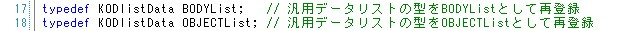
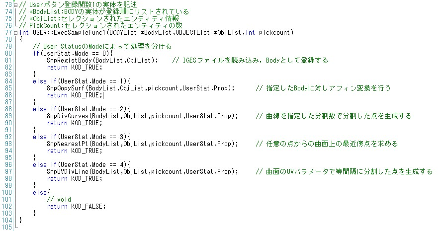
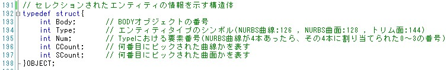
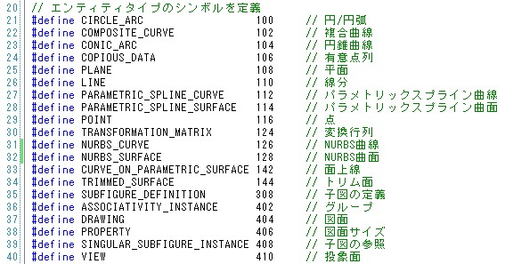
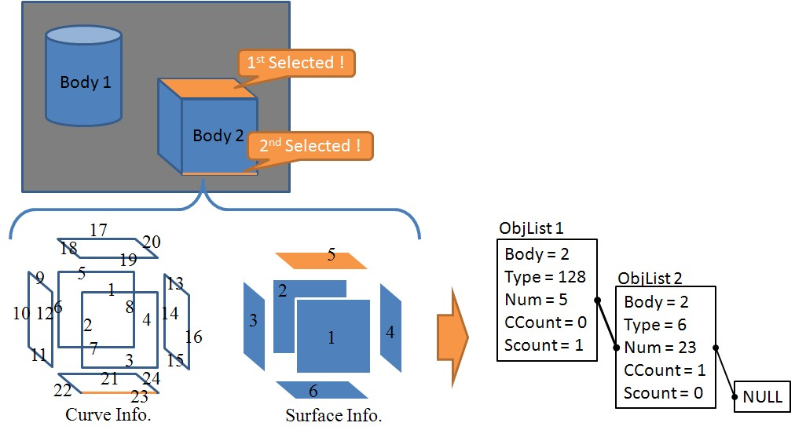

|
|
|
Prev
Index
Next |
BODYListとOBJECTList
画面上で選択された曲線/曲面の幾何情報はBODYListとOBJECTListの2つに格納され、UserFuncとへ渡されます。
このセクションでは、これら2つのリストについて説明します。
BODYListとOBJECTListはBODY.h内で次のように定義されています。更にKODlistDataはKodListFunc.h内で定義されており、リストを操作するいくつかの関数を持ったクラスです。 つまりBODYListとOBJECTListはKODlistDataクラスの別名であり、元々は同じものを指します。  次に、このKODlistDataクラスに格納されるデータの実体を見てみると、Data型として宣言されており、更にこのData型は 自己参照クラスとして定義されています。このDataクラス内で宣言されている変数void *dataに、セレクションされたデータの実体(幾何情報やセレクション情報) が格納されます。void *型として定義しているため、実際に格納するデータはどんなものでも構わず、(void *)型にキャストして格納します。 つまり、KODlistDataクラスはリスト構造を構築するための箱という役割となっています。
これをふまえて、2.6 サンプルアプリケーションのソース解説 で示したExecSampleFunc1()関数をもう一度以下に示します。19行目及び20行目において、セレクションされたデータの実体をKODlistDataからそれぞれ取り出しています。 データの取り出しには、KODlistDataクラスで定義されているgetData()関数を使います。このとき、その関数の頭には(OBJECT *)や(BODY *) が付いており、void *dataをOBJECT構造体やBODY構造体にキャストしていることが分かります。 
BODY構造体については3.8 CADデータの内部表現 を参照してください。
では次に、OBJECT構造体を見てみます。OBJECT構造体はBODY.ｈに定義されています。OBJECT構造体には、セレクションされたエンティティがどのBODYに属しているか、面なのか線なのか、エンティティに割り振られたIDなど、 セレクションされたエンティティを特定するための情報が格納されています。よってExecSampleFunc1()の19行目の様に、例えば 
OBJECT *obj = (OBJCET *)ObjList->getData(i);
とすれば、i番目にセレクションされたエンティティを特定するための情報がobjに格納さることになります。 この特定情報objを元に実際にBODYの実体を引っ張ってくるには、20行目、
BODY *body = (BODY *)BodyList->getData(obj->Body);
となります。getData()で引っ張ってくるデータのIDがobjの要素Bodyに格納されているわけです。
次に23行目を見てみると、obj->Typeの中身を見て条件分岐していることが分かります。セレクションされたエンティティがNURBS曲面(#128)なのかNURBS曲線(#126)なのかといった 形状情報がここに格納されます。エンティティに割り振られた番号はBODH.h内に定義されています。ただし、Kodatunoでは全てがNURBS表現が基本ですので、obj->Typeには#126、#128、#144しか今のところ格納されません。 
セレクションされたエンティティの幾何情報を実際に参照するには、24行目の
body->NurbsS[obj->Num]
のように、obj->NumがセレクションされたエンティティにおけるTypeごとのIDとなり、20行目で取得したBodyの実体から辿ることができます。
最後に、セレクションとOBJECT構造体との関係を模式的に表した図を示します。
| Copyright(C) Kodatuno Development Team, 2011 | Last modified: Nov. 11, 2011 |